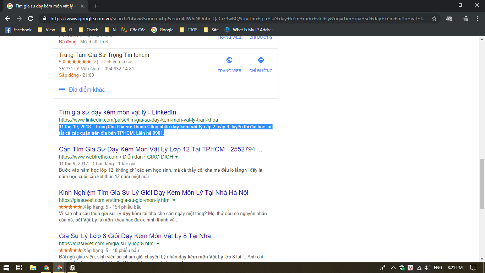

tag bong da
Từ Tết Nguyên đán

Từ Tết Nguyên đán, chiếc cầu thang được mệnh danh là "nấc thang lên thiên đường" được bố trí tại công viên Đầm Sen (quận Tân Phú, TP HCM). Mô hình này phỏng theo cầu thang vô cực từng "gây sốt" ở Đà Lạt hồi cuối năm ngoái.